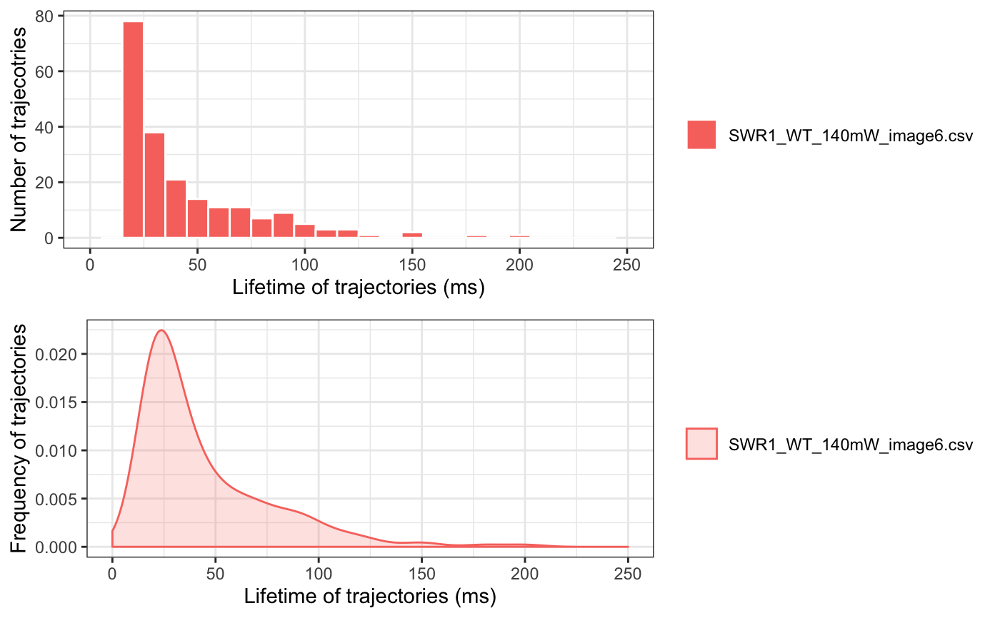

Caclulate dwell time (/residence time) for trajecotries.
dwellTime(trackll,t.interval=10,x.scale=c(min=0,max=250),plot=TRUE, output=FALSE)
| t.interval | t.interval time, default = 10ms. |
|---|---|
| trackll | Track list output from readDiatrack(). |
| x.scale | x-scale min and max range. |
| plot | An Logical indicate if plot should be generated. If plot = TRUE, the plot data will also be output. |
| output | An Logical indicate if output should be generated. 1) dwell time of tracks in the track list output to csv file. Each item in the list will have an individual csv file. 2) Plot PDF and plot data will be saved. |
dwell time list A list of dwell time for all trajectories, separated by file names of the trajectory file in Diatrack file folder. If combined dwell time is intended, use readDiatrack(folder, merge=TRUE) to generate a single length list, then apply this function.
PDF dwell time frequency plot in PDF format, when plot = TRUE.
csv dwell time output in csv format, when output = TRUE.
folder=system.file('extdata','SWR1',package='sojourner') trackll=createTrackll(folder=folder, input=3)#> #> Reading ParticleTracker file: SWR1_WT_140mW_image6.csv ... #> #> mage6 read and processed. #> #> Process complete.dwellTime(trackll,plot=TRUE)#> Warning: Removed 2 rows containing non-finite values (stat_bin).#> Warning: Removed 2 rows containing missing values (geom_bar).#> Warning: Removed 2 rows containing non-finite values (stat_density).